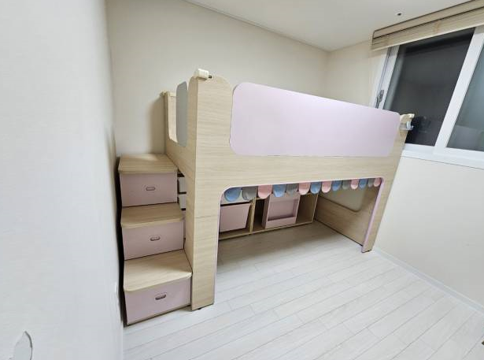
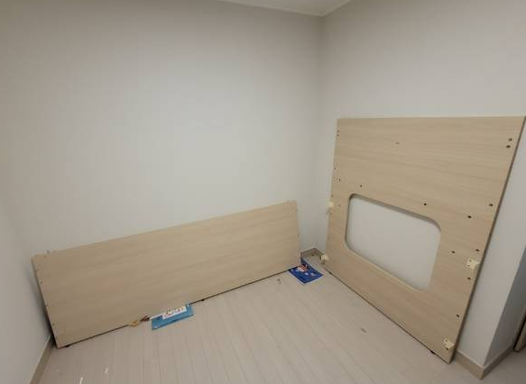
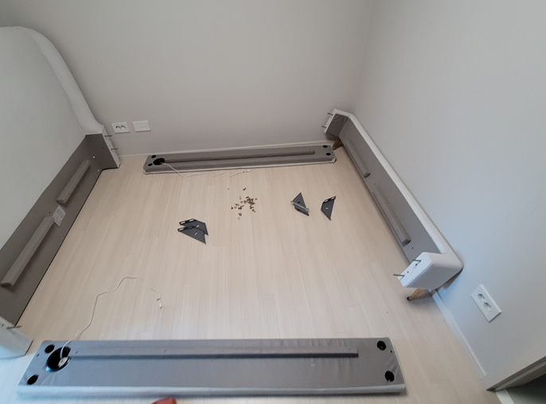
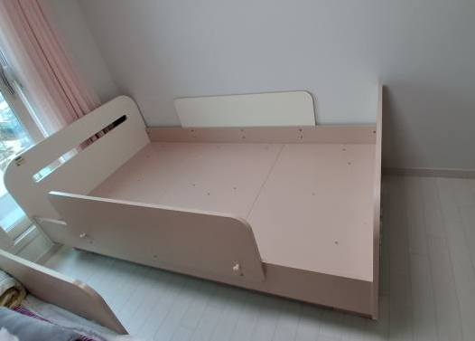
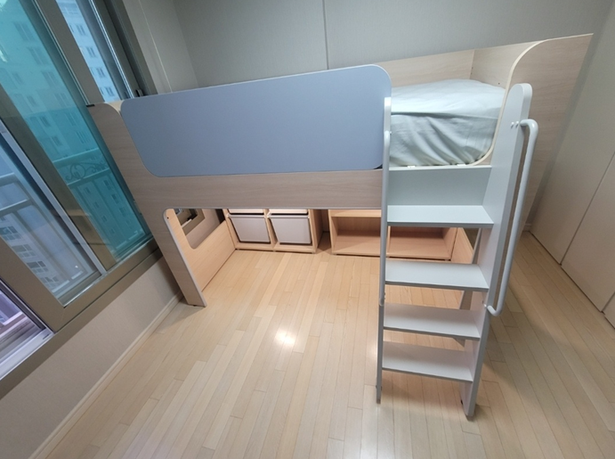
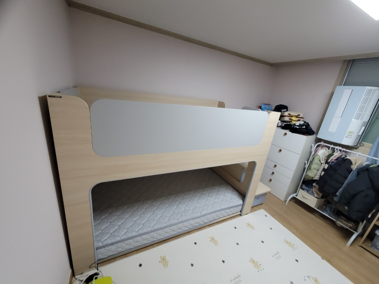
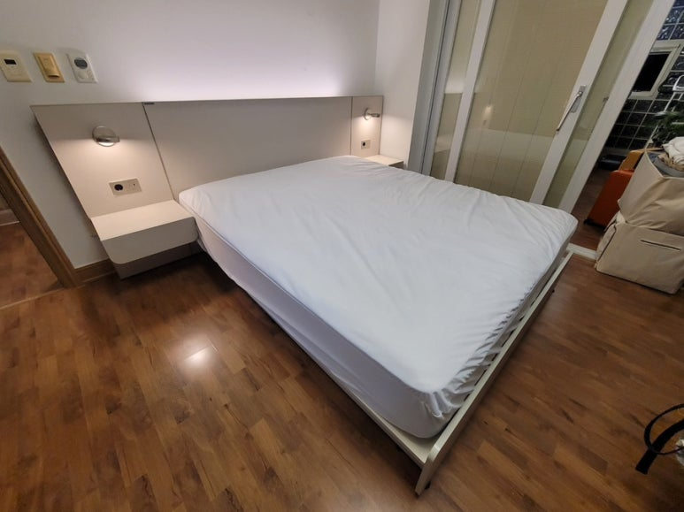
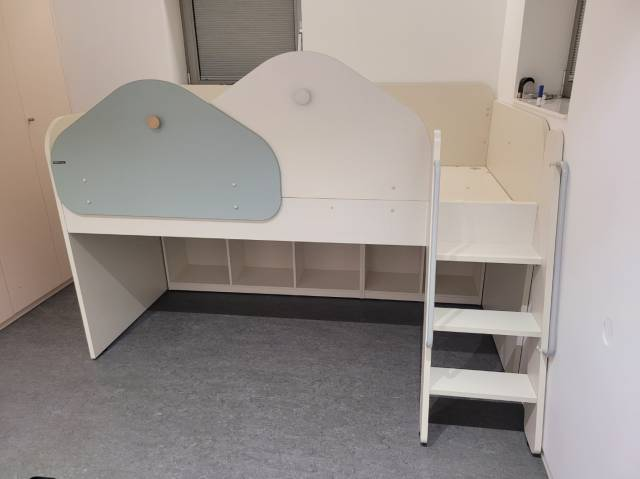
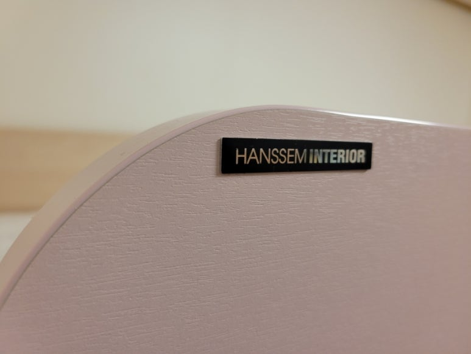

한샘 침대 이전설치
벙커침대 분해부터 재조립까지
아이 방을 옮기거나 이사를 앞두고 한샘 침대를 어떻게 옮길지 고민이신가요? 코니처는 한샘 일반 침대부터 벙커침대, 이층침대, 책장형 침대까지 분해해서 옮기고 새 자리에서 다시 조립해 드려요. 평균 경력 10년 이상의 기사님이 사는 지역 가까이에서 직접 찾아가요.

한샘 침대 이전설치
싱글 기준 10만 원부터
표시된 금액은 최소 시작 금액이에요. 가구 크기와 수량, 이전 거리, 층수, 엘리베이터 사용 여부 등 작업과 현장 상황에 따라 금액이 달라져요. 정확한 금액은 사진을 보고 문자로 안내드려요.
벙커침대와 이층침대는 구조가 달라서 사진을 보고 따로 안내드려요.
현금가 기준이며, 카드 결제나 현금영수증이 필요하면 부가세가 별도예요.
문자 상담 신청하기이런 한샘 침대를 옮겨요
- 일반 침대싱글, 퀸, 킹 사이즈 프레임과 헤드보드를 분해해서 옮기고 다시 조립해요.
- 수납 침대·저상형 침대서랍이나 하부 수납이 있는 침대, 바닥에 낮게 붙는 저상형 침대도 작업해요.
- 벙커침대한샘버니 같은 벙커침대는 계단 수납장, 안전가드, 하부 수납까지 나눠서 해체해요.
- 이층침대·책장형 침대위아래 침대를 분리하거나, 책장과 연결된 침대를 나눠서 옮겨요.
한샘 벙커침대, 옮길 때 살펴야 할 것
벙커침대와 이층침대는 높이가 있는 가구라서 일반 침대보다 확인할 게 많아요. 위층을 받치는 프레임이 정확히 맞물려야 흔들림이 없고, 안전가드와 계단도 단단히 다시 연결돼야 해요. 새 방의 천장 높이와 창문, 문 위치에 따라 놓을 수 있는 방향도 달라져요. 새 방 사진이나 치수를 함께 보내주시면 상담할 때 확인해 드려요.
한샘 침대 이전설치 과정
-
분해
매트리스를 내리고 안전가드, 계단, 헤드보드, 프레임 순서로 분해해요.


-
포장과 운반
분해한 부재를 포장해서 새 자리로 옮겨요. 이사도, 아이 방을 바꾸는 방간이동도 가능해요.
-
재조립
새 방에서 프레임을 다시 세우고, 위층과 계단, 안전가드를 연결해요.

-
마무리
매트리스를 올리고 흔들림이 없는지 확인한 뒤 마무리해요.

침대 작업 순서와 방법은 침대 종류와 현장 상황에 따라 기사님과 상담 후 진행돼요.
침대 사진과 정보, 이렇게 보내주세요
- 침대 전체 사진정면과 옆면이 나오게 찍어 주세요. 벙커침대라면 계단과 하부 공간이 보이게 찍어 주세요.
- 침대 종류와 사이즈싱글·퀸·킹인지, 벙커나 이층침대인지 알려주세요. 모델명을 아시면 더 좋아요.
- 두 집 정보출발·도착 지역과 거리, 엘리베이터를 쓸 수 있는지, 몇 층인지 적어 주세요.
- 새 방 정보천장 높이와 침대를 놓을 벽 길이를 알면 미리 확인할 수 있어요.
침대 옮기기 전에 해 둘 일
침구와 베개는 미리 걷어 두시고, 벙커침대 하부 수납과 계단 서랍 속 물건도 비워 주세요. 매트리스 커버를 씌워 두면 운반할 때 깨끗하게 옮길 수 있어요. 새 방에서는 침대를 놓을 자리를 비워 두시면 조립을 바로 시작할 수 있어요.
이런 경우에 많이 맡겨요
다시 조립한 침대




최근 한샘 침대 작업 지역
서울, 경기, 인천 수도권 전 지역의 한샘 침대 이전을 맡아요.
- 인천 미추홀 → 파주한샘 이층침대 · 분해 후 재설치
- 양천한샘 저상형 침대 · 철거 후 이전설치
- 분당한샘 책장형 침대 · 이동설치
- 분당·구리한샘버니 벙커침대 · 해체 재조립
- 성북 길음한샘 벙커침대 · 이전 재설치
- 하남 미사한샘버니 벙커침대 · 방간이동
- 판교한샘 벙커침대 · 이전 재설치
- 강서한샘 침대 · 장롱과 함께 이전설치
- 성복한샘 침대·매트리스 · 방간이동 재배치
자주 묻는 질문
침대를 분해한 날 바로 설치도 되나요?
네, 분해한 날 새 방에서 바로 조립할 수 있어요. 벙커침대처럼 큰 침대는 이동 거리와 함께 일정을 상담해요.
매트리스도 함께 옮겨 주나요?
네, 침대와 함께 쓰던 매트리스도 같이 옮길 수 있어요. 매트리스 사이즈를 함께 알려주세요.
이층침대를 따로 떼어 두 방에 놓을 수 있나요?
모델에 따라 위아래를 분리해서 쓸 수 있는 경우가 있어요. 침대 사진을 보내주시면 가능한지 상담해 드려요.
새 방 천장이 낮은데 벙커침대가 들어갈까요?
천장 높이와 침대 높이를 비교해 봐야 해요. 새 방 천장 높이를 재서 보내주시면 상담할 때 확인해 드려요.
한샘 침대 이전설치 비용은 어떻게 계산하나요?
침대 사이즈와 종류(일반·벙커·이층), 이동 거리, 양쪽 집 층수와 엘리베이터 여부를 보고 정해요. 침대 사진을 보내주시면 알려드려요.
침대 이전 견적, 문자로 받기
침대 사진과 출발·도착 지역을 문자로 남겨 주세요. 상담 시간(07~18시) 안에 순서대로 답장드려요.
문자 상담 신청하기